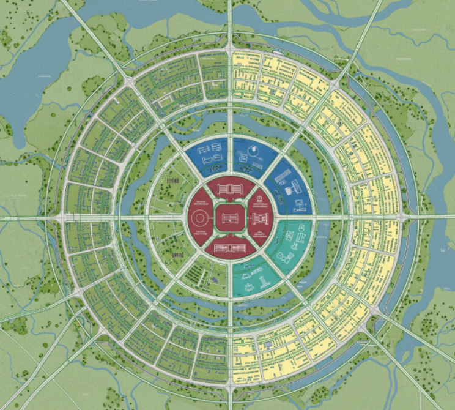
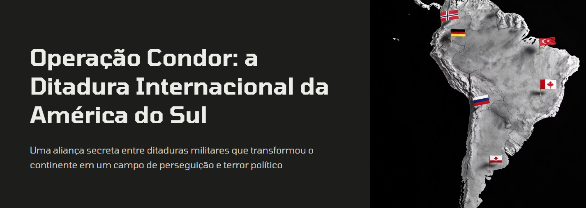

República Liberal- 06/10Geografia
Em grupos de 2 ou 3 pessoas, fomos responsáveis por projetar uma nova capital para o Brasil, definindo o nome da cidade, sua localização geográfica e o planejamento urbano através de uma planta baixa. Criamos também esboços do Palácio Presidencial, do Congresso Nacional e do Supremo Tribunal Federal, além de imaginar aspectos como segurança, cultura, educação, saúde e serviços públicos. Por fim, escrevemos uma justificativa explicando os conceitos e ideias por trás do projeto, considerando a história brasileira e nossas características culturais, econômicas, sociais e geográficas
Acessar Atividade Julgamento de Getúlio Vargas- 08/09História
O julgamento sobre a Era Vargas foi organizado com a abertura feita pelos juízes, que explicaram as regras e os temas. Em cada rodada, dois estudantes atuaram como advogados ou promotores, com até 5 minutos para defesa dos argumentos e direito a três perguntas para cada testemunha. A primeira rodada contou apenas com testemunhas e serviu como introdução ao tema. As quatro rodadas seguintes discutiram: intervenção econômica e nacionalismo; trabalhismo e populismo; censura, propaganda e cultura; e repressão aos opositores. Ao final, o júri se reuniu separadamente para decidir se Vargas seria culpado ou inocente em cada tema, registrando suas justificativas em documento; depois, os juízes apresentaram o veredito final com base nas conclusões do júri.
Acessar Atividade
Anistia e Memória na América Latina: o Brasil e seus vizinhos latinos após as ditaduras- 14/11Geopolítica
Os estudantes deverão pesquisar a Lei da Anistia de 1979 e o processo de redemocratização no Brasil, as políticas de memória, verdade e justiça em diferentes países da América Latina. Após esta pesquisa, deverá ser feita uma comparação crítica entre os modos de lidar com o passado autoritário. O objetivo da atividade é a reflexão crítica sobre a relação entre esquecimento, impunidade e fortalecimento da democracia.
Acessar Atividade 